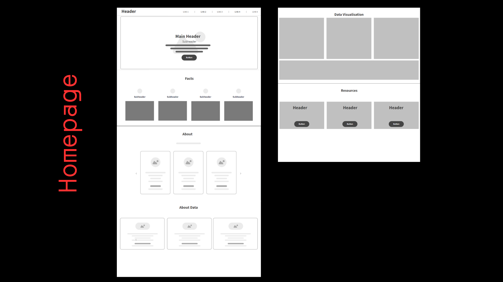
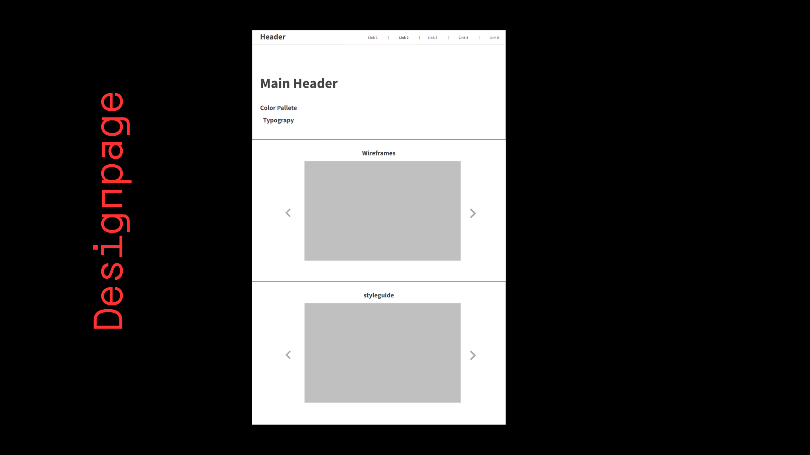
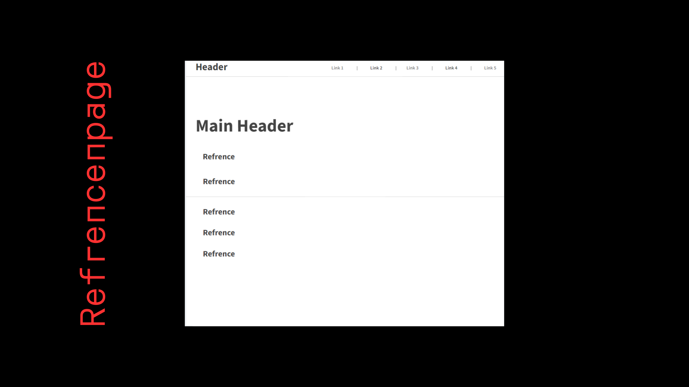
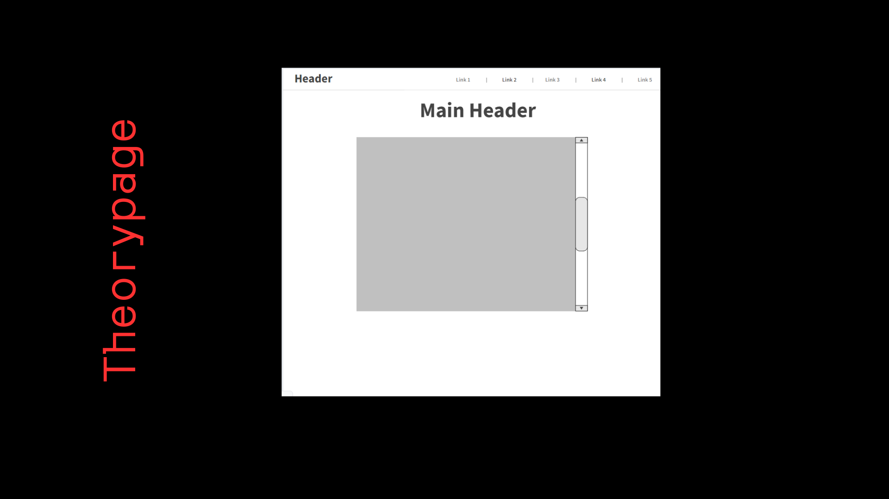
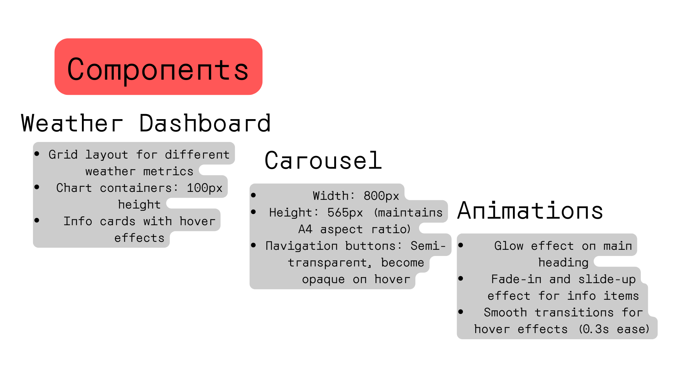
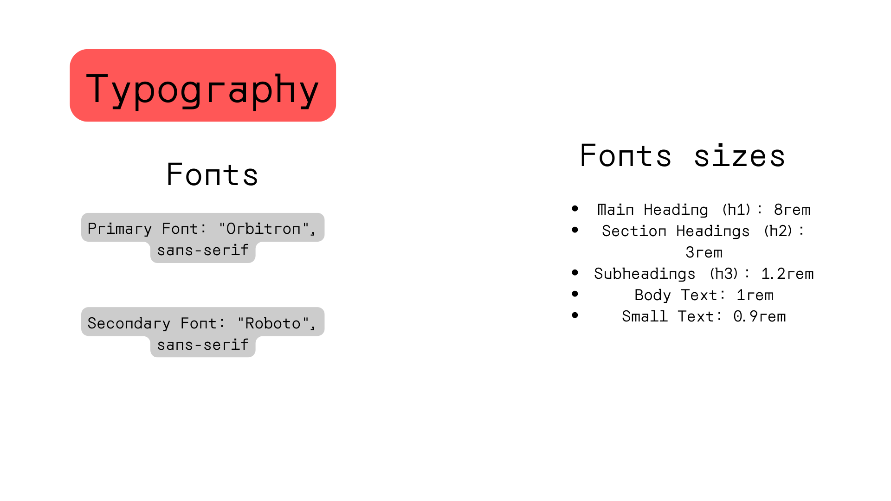
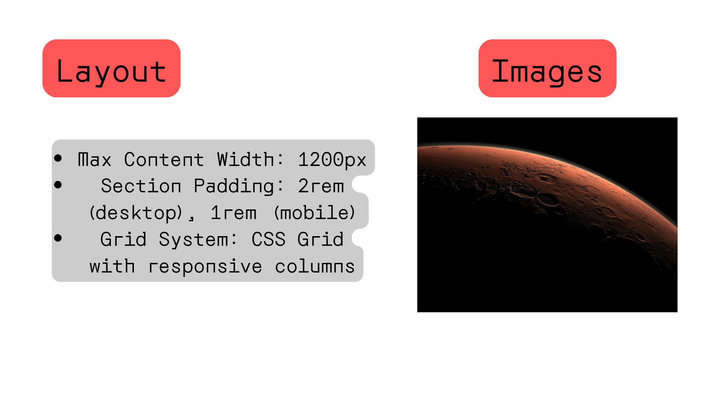
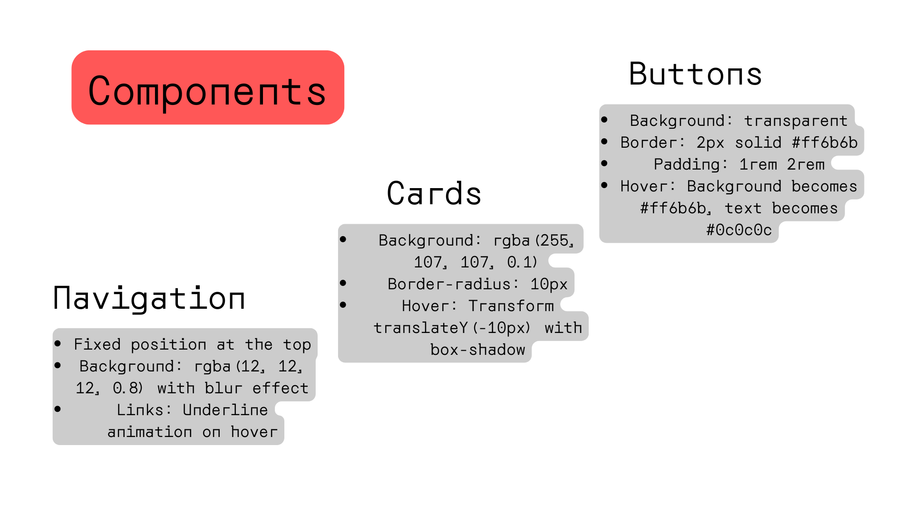
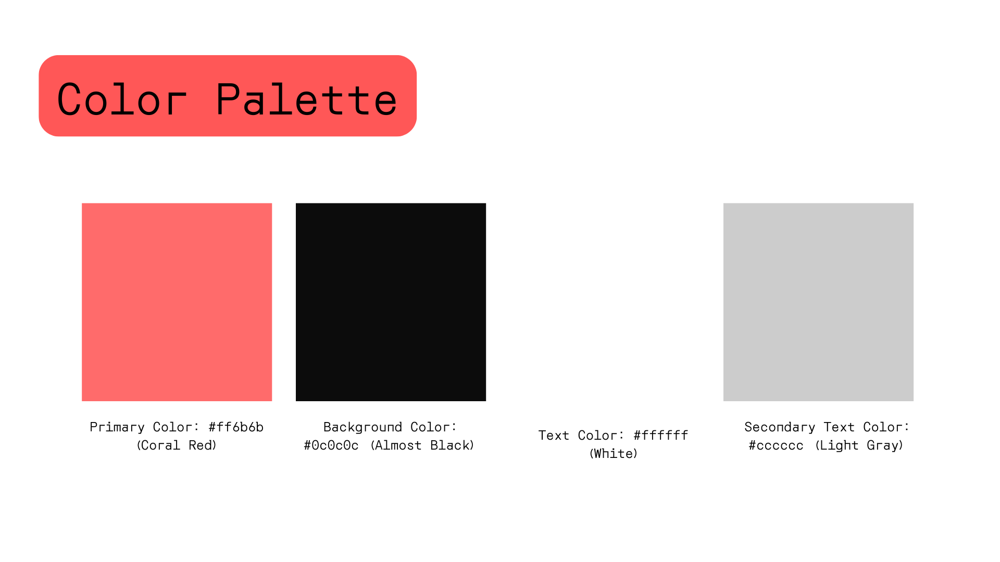

Design Choices
Color Palette
#0c0c0c
#ff6b6b
#ffffff
#cccccc
Typography
Primary Font: Orbitron
Secondary Font: Roboto
Mars Weather Guide
About This Data
This website provides the latest weather data from NASA's InSight Mars lander. The data is collected at Elysium Planitia, a flat, smooth plain near Mars' equator.
The InSight lander's weather sensors are part of its Auxiliary Payload Sensor Subsystem (APSS), which helps the mission's primary science goals by monitoring environmental conditions that could affect the lander's seismometer.
Understanding the Terms
- Sol: A Martian day, which is about 24 hours and 39 minutes long.
- Temperature: Measured in Celsius, showing average, minimum, and maximum for each sol.
- Pressure: Atmospheric pressure on Mars, measured in Pascals (Pa).
- Wind Speed: Measured in meters per second (m/s).
- Tau: A measure of the opacity of the atmosphere due to dust. Higher values indicate more dust in the atmosphere.
Reading the Graphs
Each graph shows data over the last seven sols (Martian days):
- Temperature Graph: The red bars show average temperatures, with error bars indicating the minimum and maximum temperatures for each sol.
- Wind Speed Graph: This graph displays average wind speeds for each sol.
- Pressure Graph: The line graph shows how atmospheric pressure changes over time.
Seasonal Changes
Mars experiences significant seasonal changes due to its tilted axis and elliptical orbit:
- Spring: The polar ice cap begins to sublimate, releasing CO2 into the atmosphere and increasing atmospheric pressure.
- Summer: Warmer temperatures can lead to increased dust activity, sometimes triggering planet-wide dust storms.
- Fall: Temperatures begin to drop, and the atmosphere becomes clearer as dust settles.
- Winter: CO2 begins to freeze out of the atmosphere at the poles, lowering the overall atmospheric pressure.
Wireframes




Styleguide




